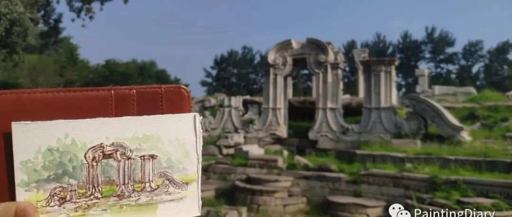

圆明园荷花节写生！
很久没有写生啦，
今天写生的主题是圆明园荷花～
每次写生都会遇到有意思的人和事情，
今天也要和大家分享～
先放一张荷花美景～


路上碰到了巨大的睡莲～的叶子～
和负责照看它们，正在附近捞水草的老爷爷，
也把他一起画了进来～


我问老爷爷能不能照张合影，
老爷爷赶紧把小褂的扣子系好，
挺起胸脯，开心地笑起来看向镜头～
这么热的天气，真是辛苦啦～

还有来圆明园必须要打卡的大水法，
画的时候碰到了想要和画合影的歪果仁：


之后在黑天鹅基地碰到了一只在岸上休息、悄悄摸鱼的鹅宝：

我还拍了视频纪录它摸鱼的全过程，
在一个鸟语花香，晨风阵阵的地方摸鱼，
您可真是太会享受了啊～
别人都在晨练游泳呢！
写生总是能遇到很多有意思的事情，
而且每次写生收获到的陌生人的夸奖，
都会让我获得新的动力～
虽然很晒，但是还是会努力坚持的～
毕竟这样子的快乐是呆在家里怎么也获取不到的呀～
好啦，今天就到这边～
欢迎留言告诉我你最喜欢今天的哪一张～
也欢迎转发or给个"在看"呦～蟹蟹～
祝你天天开心～下回见！
//喜欢记得关注下再走呦～